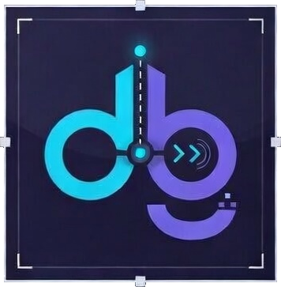

One CLI. Many debuggers. Your AI agent stops guessing at runtime state and starts observing it.
The bottleneck for agentic engineering is not generation. It is diagnosis.
The agent reads source code, builds a theory, rewrites something, and hopes. Wrong guess? It guesses again. Five cycles of guess-and-rebuild per bug. Tokens, time, and trust — burned.
The agent sets a breakpoint, steps to the crash, inspects the variable, and reads the actual value. Root cause on the first pass. One cycle. Done.
The agent receives a crash report. Instead of guessing, it launches a debug session, steps to the error, and reads the state.
Install the binary, point it at your agent. No configuration, no wrappers, no adapters.
Install
curl -sSf https://raw.githubusercontent.com/redknightlois/dbg/main/install.sh | sh # or, if you already have Rust: cargo install dbg-cli
Connect to your agent
dbg --init claude # or: dbg --init codex
The agent now knows when and how to use dbg. It picks the right backend, sets breakpoints, and interprets debugger output on its own.
The agent learns dbg once. It works everywhere.